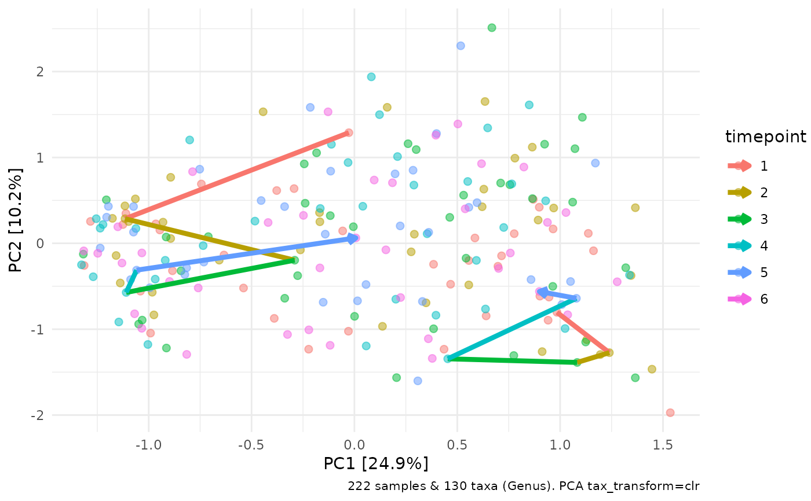
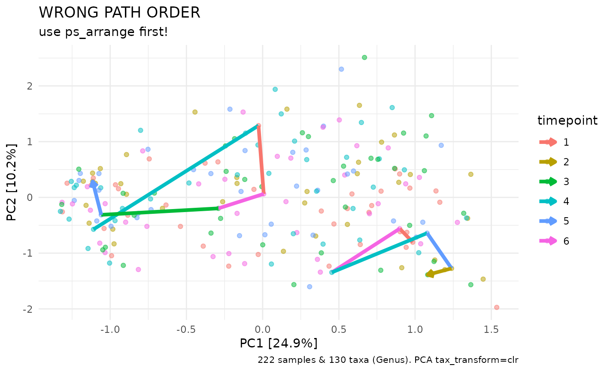

Useful for tracing a few select individuals over time on an ordination plot. Samples in phyloseq must be arranged in order of timepoint for the path connections to be drawn in the correct order! You can arrange the samples in timepoint order with ps_arrange.
Arguments
- ggplot
ggplot scatterplot such as the output of ord_plot
- id_var
name of variable used to identify grouping of points
- id_values
values of id_var variable used to identify groups of points to draw
- mapping
ggplot aesthetics created by aes(), e.g. aes(colour = ?) - group is already set to id_var internally!
- arrow
arrowhead to add to path, NULL for none
- ...
additional arguments passed to geom_path
Examples
library(ggplot2)
data("dietswap", package = "microbiome")
# arrange by timepoint first (or whatever your own time variable is)
dietswap %>%
ps_arrange(timepoint) %>%
tax_fix() %>%
tax_transform("clr", rank = "Genus") %>%
ord_calc(method = "PCA") %>%
ord_plot(colour = "timepoint", alpha = 0.5, size = 2) %>%
add_paths(
id_var = "subject", id_values = c("azl", "byn"),
mapping = aes(colour = timepoint), linewidth = 1.5
# size = 1.5 # size instead of linewidth in older ggplot2 versions
)

# paths do NOT connect points in the correct order without arranging first
dietswap %>%
tax_fix() %>%
tax_transform("clr", rank = "Genus") %>%
ord_calc(method = "PCA") %>%
ord_plot(colour = "timepoint", alpha = 0.5) %>%
add_paths(
id_var = "subject", id_values = c("azl", "byn"),
mapping = aes(colour = timepoint), linewidth = 1.5
# size = 1.5 # size instead of linewidth in older ggplot2 versions
) +
ggtitle("WRONG PATH ORDER", "use ps_arrange first!")
